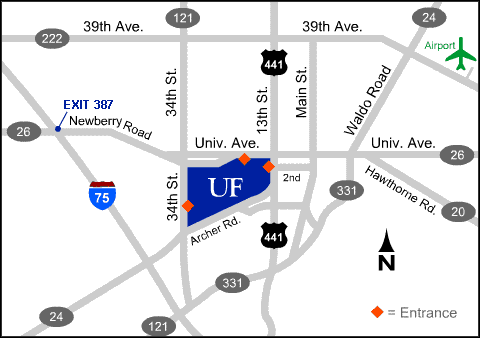
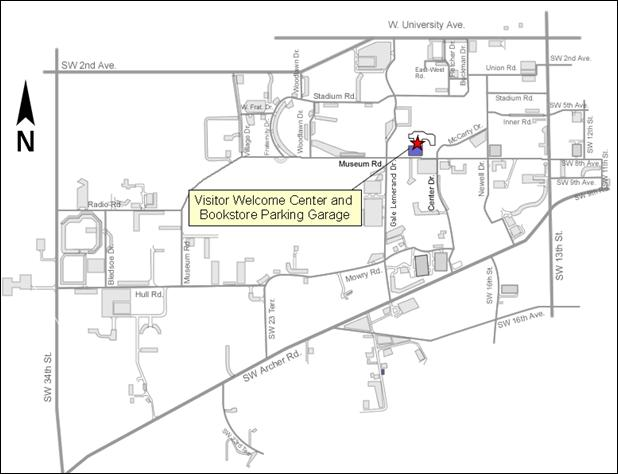

Contact Us
Telephone: 352 294 2027272 Grinter Hall
P.O. Box 115500
Gainesville, FL 32611-5500

Dr. David Norton; Interim Director
Email: dpnorton@ufl.edu

Ms. Canan 'Janan' Balaban; Associate Director
Email: cbalaban@ufl.edu
Phone: 352 294 2027
Visit Us
Dr. David Norton, Interim DirectorCanan 'Janan' Balaban, Associate Director
University of Florida
272 Grinter Hall

Driving Directions to UF
From Gainesville Regional Airport
Approximately 30 minutes from UF
Upon leaving the Gainesville Airport, make a right turn onto 39th Avenue (SR 222), heading west. At US 441 (N.W. 13th Street) make a left turn, heading south. Make a left turn at the University Avenue and then another left turn at Gale Lemerand Drive. (You will see the UF stadium on your left). Pass 1st light. Make a left turn (next lights) on Museum road. Make a left turn on Reitz Union Drive to the parking garage (UF Book store and Reitz Union).
From Jacksonville Airport, 'Easy Way'
Approximately 2.5 hours from UF
Take I-95 South, toward Jacksonville, to I-295. Exit onto I-10 (Note: If you miss the I-295 exit, follow I-95 to where it intersects with I-10). Take I-10 West (towards Tallahassee) to I-75. Take I-75 to exit 387, Newberry Road. When you get off of the ramp go east for five miles; eventually Newberry Road becomes University Avenue (Note: You should pass the Oaks Mall on your right shortly after traveling on Newberry road). Continue traveling East on University Ave. Pass 34th Street. Make a right turn at Gale Lemerand Drive. (You will see the UF stadium on your left). Pass 1st light. Make a left turn (next lights) on Museum road. Make a left turn on Reitz Union Drive to the parking garage (UF Book store and Reitz Union).
'Short Route' – Approximately 2 hours from UF
Take I-10 only as far as US 301 (it will be one of the early exits) at Baldwin. Head south on 301 to Waldo. CAUTION: Beware of speed traps along 301, especially in Lawtey, Starke, Hampton, and Waldo. At Waldo, take a right onto SR 24 to Gainesville (has big sign for Gainesville). Follow SR 24 to 39th Avenue/SR 222, just past the airport. Turn right (West) onto 39 Avenue heading west. At 13th Street make a left turn and then another left turn at the University Avenue. Then make a left turn at Gale Lemerand Drive. (You will see the UF stadium on your left). Pass 1st light. Make a left turn (next lights) on Museum road. Make a left turn on Reitz Union Drive to the parking garage (UF Book store and Reitz Union).S.W.
From Tallahassee Airport
Approximately 2.5 hours from UF
Follow the directional signs to I-10. Take I-10 heading east towards Lake City until it meets I-75. Take I-75 to exit 387, Newberry Road. When you get off of the ramp go east for five miles; eventually Newberry Road becomes University Avenue (Note: You should pass the Oaks Mall on your right shortly after traveling on Newberry road.) Continue traveling East on University Ave. Pass 34th Street. Make a right turn at Gale Lemerand Drive. (You will see the UF stadium on your left). Pass 1st light. Make a left turn (next lights) on Museum road. Make a left turn on Reitz Union Drive to the parking garage (UF Book store and Reitz Union).
From I-75
Take I-75 to exit 387, Newberry Road. When you get off of the ramp go east for five miles; eventually Newberry Road becomes University Avenue (Note: You should pass the Oaks Mall on your right shortly after traveling on Newberry road.) Continue traveling East on University Ave. Pass 34th Street. Make a right turn at Gale Lemerand Drive. (You will see the UF stadium on your left). Pass 1st light. Make a left turn (next lights) on Museum road. Make a left turn on Reitz Union Drive to the parking garage (UF Book store and Reitz Union).
Parking
See Map given below:
The Visitor Welcome Center and Bookstore parking garage is located at the Reitz Union, at the corner of Museum Road and Reitz Union Drive. Daily and short-term fees are to be paid at pay stations located at the stair towers and elevators in the garage. Standard daily fee: $5.00 – 159 spaces available
The garage is an unrestricted pay facility available to all members of the university community. This garage can accommodate 300 vehicles. There are 45 short term parking spaces located in the garage.
The garage hours of operation are Monday through Friday, 7:30 am to 4:30 pm. Short-term and daily fees apply during this time. The garage may be used during non-operating hours for short-term parking, free of charge.

Grinter Hall
Marked with the blue (B) bubble color in the map given below. (click on map for better resolution)
It is a walking distance from the Reitz Union Parking garage.